| SOURCE | TITLE| IMAGE MATCH | click to source page |
| eBay | 1882 magazine engraving ~ BEETHOVEN | eBay | 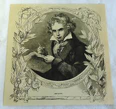 |
| Media Storehouse | Fine Art Finder Print of Beethoven (Colour Litho). Art Prints, Posters & Puzzles from Fine Art Finder | 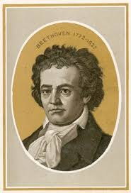 |
| MutualArt | Louis Henri Grevedon | Ludwig van Beethoven. Mort le 26 Mars 1827. D'après le portrait original de Monsieur Ferd. Schimon, appartenant à Monsieur Schindler. Propriété de la Société des Concerts. (1841) | MutualArt | 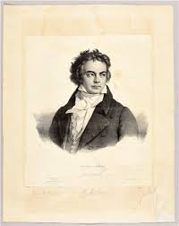 |
| eBay | FRIEDRICH SCHILLER. CDV OF ARTWORK PORTRAIT. | eBay | 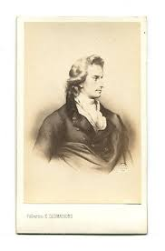 |
| eBay | 2014 Goodwin Champions LUDWIG VAN BEETHOVEN #141 SHORT PRINT | eBay | 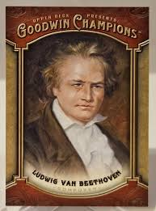 |
| Wikimedia.org | File:Johann Wolfgang von Goethe.jpg - Wikimedia Commons | 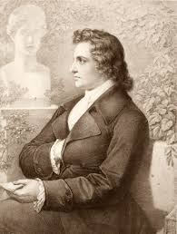 |
| Allposters | Portrait of Ludwig Van Beethoven, C.1860S-90S (Pencil & Black Chalk on Paper) Giclee Print - British School | AllPosters.com | 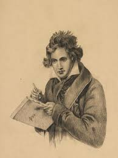 |
| Amazon.com | Amazon.com: Friedrich Schiller N(1759-1805) Johann Christoph Friedrich Von Schiller German Poet And Playwright Mezzotint After The Painting 1791 By Anton Graff Poster Print by (24 x 36): Posters & Prints | 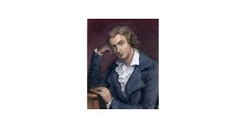 |
| ARENA CLUB | Beethoven | ARENA CLUB | 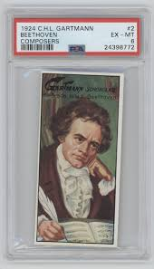 |
| Art.com | Ludwig Van Beethoven, 1884-90 Giclee Print | Art.com | 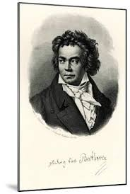 |
| AbeBooks | Antique Print-Portrait-The inventor of lithography Aloys Senefelder-Gendall-1819: (1819) Art / Print / Poster | ThePrintsCollector | 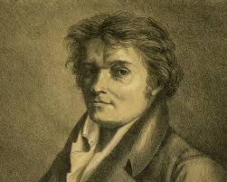 |
| Posterazzi | Ludwig Van Beethoven Csu ArchivesEverett Collection History - Item # VAREVCPSDLUVACS002 - Posterazzi | 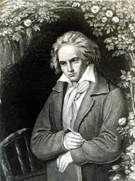 |
| eBay | Ludwig van Beethoven 1950's Famous Imortais Card Rare.. Read | eBay | 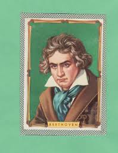 |
| WordPress.com | Print Timeline | 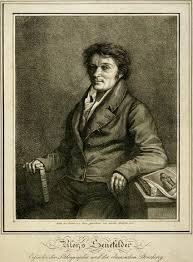 |
| Etsy | PHILIP GLASS Original Oil Painting on Canvas in White Box Frame 43cmx33cm - Etsy | 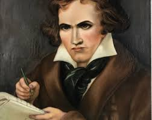 |
| Walmart | Historic Framed Print, Ludwig Van Beethoven, 17-7/8" x 21-7/8" - Walmart.com | 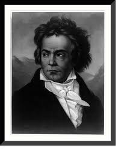 |
| eBay | 1938 Gutermann Trade Card #89 Joseph Montgolfier Aviation Pioneer Balloonist | eBay | 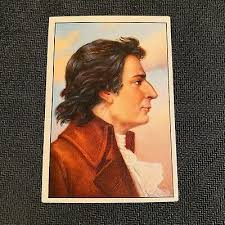 |
| Tamino Autographs | Composers Photo postcards Unsigned Letters A - D | 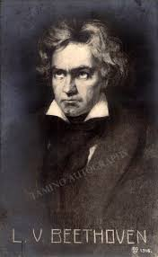 |
| The Witness | Your compass in the community | Opinion | Keats, a poet haunted by death | The Witness | 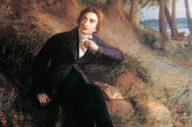 |
| GetArchive | 34 Portraits of ludwig van beethoven Images: PICRYL - Public Domain Media Search Engine Public Domain Search | 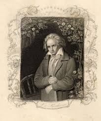 |
| Alamy | Ludwig van beethoven portrait hi-res stock photography and images - Alamy | 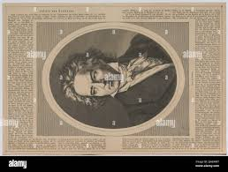 |
| Alamy | GOETHE Johann Wolfgang von Goethe archive historic postcard. German renowned writer and statesman, considered the greatest German literary figure of the modern era. 28 August 1749 – 22 March 1832 commemorative poster | 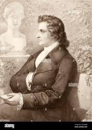 |
| Art.com | 'Portrait of Ludwig Van Beethoven, C.1860S-90S (Pencil & Black Chalk on Paper)' Giclee Print - British School | Art.com | 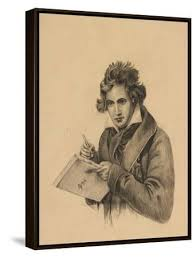 |
| eBay | 78tk-paper catalog- UK-HIS MASTER'S VOICE-GERMAN Catalogue -1949 | eBay | 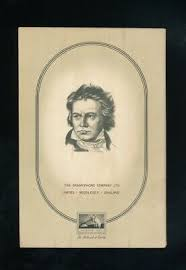 |
| Fine Art America | Samuel Johnson portrait Wood Print by George Zobel - Fine Art America | 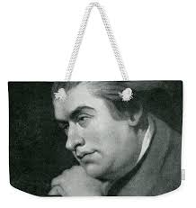 |
| eBay | SD2133 MUSIC WORLD FAMOUS COMPOSER '' BEETHOVEN "" EARLY RPPC | eBay | 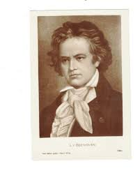 |
| Album Online | ALBERT HENRY PAYNE, HEINRICH WILHELM STORCK. Beethoven / Storck & Payne / 1850 - Album alb5580116 | 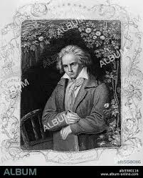 |
| AbeBooks | Portrait of Ludwig van Beethoven by Friedrich Gustav Adolf Neumann (1825-1884): Fair No Binding (1870) | The Online Portrait Gallery | 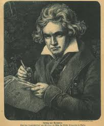 |
| eBay | Ode to Joy FREDERICK VON SCHILLER 1835 engraving Von Kugelgen pinx Posselwhite s | eBay | 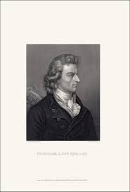 |
| Alamy | Romantic music period hi-res stock photography and images - Alamy | 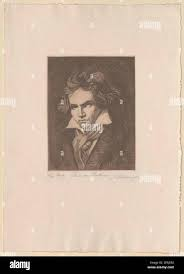 |
| Amazon.com | Beethoven for the Organ: Beethoven's Eroica Variations, Opus 35, Arranged for the Organ by W. D. Halsey: van Beethoven, Ludwig, Halsey, William Dawson: 9781499247725: Amazon.com: Books | |
| eBay | Postcard- Johann Wolfgang von Goethe - German Poet | eBay | 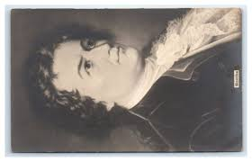 |
| AbeBooks | Goethe's Female Characters. From the original drawings of William Kaulbach. With explanatory text by G.H. Lewes. by [GOETHE, Johann Wolfgang von (1749-1832)] LEWES, G. H.; William KAULBACH (illus.).: (1867) | Jeff Weber Rare Books | 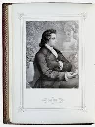 |
| Alamy | Death ludwig van beethoven hi-res stock photography and images - Alamy | 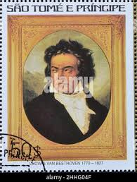 |
| eBay | Ludwig van Beethoven artist postcard 1909 | eBay | 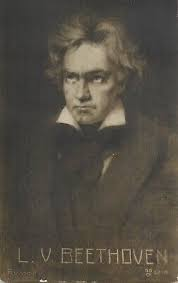 |
| Granger Art on Demand | George Gordon Byron (1788-1824) #11 by Granger | 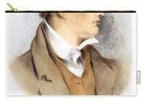 |
| Amazon.com | Amazon.com: Heinrich Heine (1797-1856) Ngerman Poet And Critic Drawing 1826 Or 1828 By JHW Tischbein Poster Print by (24 x 36): Posters & Prints | 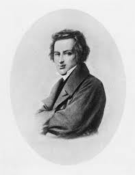 |
| Media Storehouse | Ludwig Van Beethoven Print by Mary Evans Prints Online. Art Prints, Posters & Puzzles from Mary Evans | 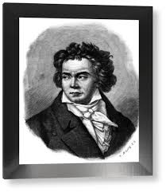 |
| Alamy | Aloys senefelder german inventor lithography hi-res stock photography and images - Alamy | 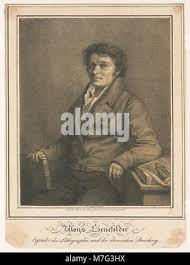 |
| Alamy | Roose, Theodor Georg August Stock Photo - Alamy | 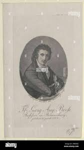 |
| Slideshare | Music of Classical Period REVISED.pptx | 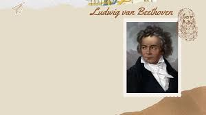 |
| Art.com | Johann Wolfgang Von Goethe Giclee Print | Art.com | 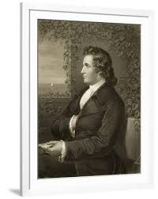 |
| Alamy | Part of a painting Portrait of Ludwig van Beethoven. between 1804 and 1805. Beethoven 3 Stock Photo - Alamy | 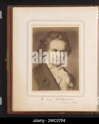 |
| pixels.com | Ludwig Beethoven #1 Spiral Notebook by Rebecca Mike - Rebecca Mike Official Website | 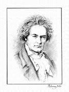 |
| Slideshare | Franz schubert | PPTX | 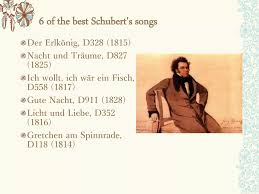 |
| Media Storehouse | Ludwig van Beethoven Fine Art Print (19th Century Engraving). Art Prints, Posters & Puzzles from Fine Art Finder | 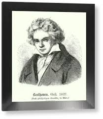 |
| Allposters | Ludwig Van Beethoven | AllPosters.com | 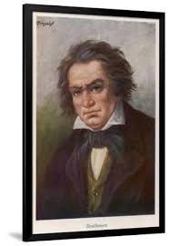 |
| Apple | Ria Ginster - Apple Music | 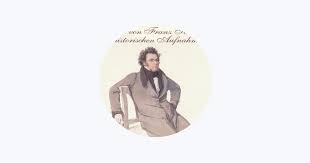 |
{kind=link}